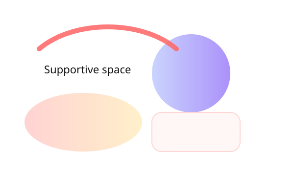

Welcome — {{THERAPIST_NAME}}
I offer compassionate, skillful therapy for anxiety, trauma, relationships and life transitions. Work with me in small cohort programs and private sessions that emphasize breath, presence, and pragmatic change.

Begin with a gentle diagnostic
A short intake to map what matters most — symptoms, supports, and life context. This sets the pace for a collaborative plan.
Discovery
15–20 minute call to clarify needs and logistics.
Assessment
30–45 minute intake exploring history, strengths, and coping patterns.
Pathway
A recommended 8–12 week focus aligned with your goals.
A clear, compassionate plan
Plans are co-created. Below is a typical cohort rhythm and private track option.
Cohort Program — "Mindful Bridges"
8 weekly cohort sessions with small group practices, reflective prompts, and live Q&A.
Private Track
Individual sessions tailored to trauma-informed practices, relational work, and coping tools.
Micro practices you can try today
- 2-minute anchoring breath: Inhale 4, pause 2, exhale 6 — repeat 4 times.
- Check-in prompt: Notice one sensation and one emotion without judging.
- Evening tally: Name 3 small things that went well before bed.
These micro-habits are supportive tools, not replacements for therapy.
Transparent investment
Choose a pathway that fits your rhythm. Sliding scale options available for limited spots.
Cohort — "Embodied Cohort"
$320 per participant — includes 8 sessions and materials.
Private Session
$170 per 50-minute session.
Intake + Plan
$120 (single intake session).
Ready to begin?
Space is limited. I invite you to book a discovery call to see if we are a good fit.
{{PRIMARY_CTA_LABEL}}Confidentiality: Sessions are private, and I follow professional confidentiality practices. If you are in crisis or danger, contact local emergency services or crisis lines immediately. Therapy support does not promise specific outcomes.